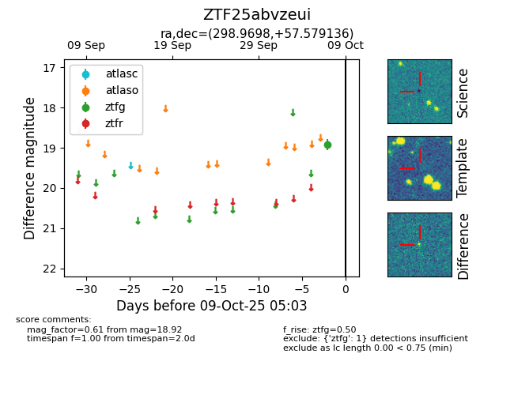

FINK: ZTF25abvzeui
Lasair: ZTF25abvzeui
ALeRCE: ZTF25abvzeui
ZTF25abvzeui (ztf,fink)
equatorial (ra, dec) = (298.9698,+57.57914)
galactic (l, b) = (90.7689,+14.62588)

last ztfg=18.92
1 ztfg detections